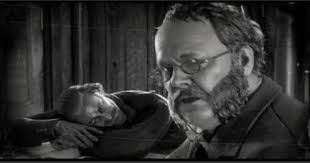
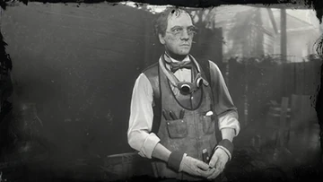
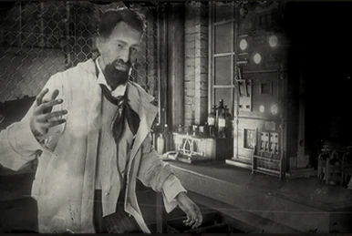

Wiki ANNO 1901
Edward MoonStone
O velho que todos conhecem e virse-versa, o embaixador que promete não só mudar StrawBerry como a America em questão!

Andérito Malaquias
É um antigo ferreiro que vive nas montanhas, come oque caça vive como consegue e depende 0 da sociadade.

Flip Ortiz
Um cientiste maluco que se esconde no meio do mato com o objetivo de fazer experiências e de renovar o mundo, tem varios indicios de ser anti-social e por muitos um mito
